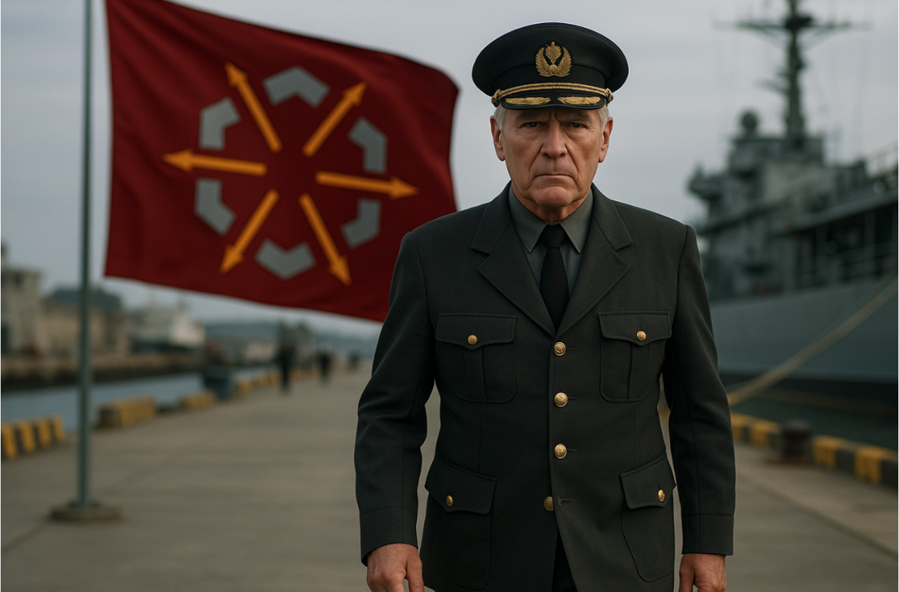

Top Stories

Northern Federation Begins Construction of Strategic Base in Tchicaya
View
Global Affairs
Northern Federation Begins Construction of Strategic Base in Tchicaya
View
Politics
No articles yet.
Finance
No articles yet.
Culture
No articles yet.
Technology
No articles yet.